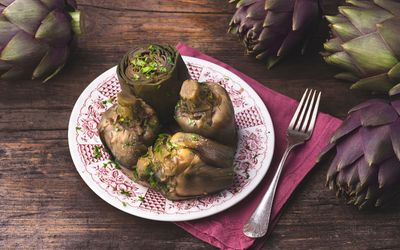
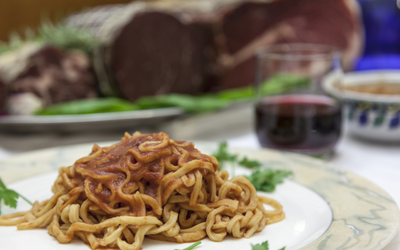

Slow Food Recipes
Tuscan Ribollita
A hearty vegetable and bread soup made with cannellini beans, kale, and stale bread, simmered slowly to develop rich flavors, a classic Tuscan dish.
Ingredients:
- Cannellini beans
- Kale
- Stale bread
- Carrots
- Celery
- Onion
- Garlic
- Tomatoes
- Vegetable broth
- Parmesan rind
- Rosemary
- Thyme
- Olive oil
- Salt
- Pepper
Instructions:
1. Cook cannellini beans until tender, then drain and set aside.
2. Sauté chopped onion, garlic, carrots, and celery in olive oil until softened.
3. Add chopped tomatoes, kale, cooked beans, and vegetable broth to the pot.
4. Simmer the soup over low heat, adding a Parmesan rind and herbs for flavor.
5. Tear stale bread into chunks and add to the soup, stirring to thicken.
6. Season with salt and pepper to taste before serving warm.
Piedmontese Bollito Misto
A slow-cooked mixed meat dish featuring various cuts simmered in broth until tender, a traditional dish of Piedmont.
Ingredients:
- Beef brisket
- Veal shank
- Chicken
- Pork ribs
- Cotechino sausage
- Carrots
- Onion
- Celery
- Garlic
- Bay leaves
- Cloves
- Juniper berries
- Black peppercorns
- Salt
Instructions:
1. Place the meats, vegetables, and spices in a large pot and cover with water.
2. Bring to a boil, then reduce the heat and simmer gently until the meats are cooked through and tender.
3. Remove the meats from the broth and slice thinly.
4. Serve hot with traditional accompaniments such as salsa verde, mostarda, and horseradish sauce.
Ligurian Trofie al Pesto
Hand-rolled pasta served with a classic Ligurian pesto sauce made with basil, pine nuts, garlic, and Parmesan cheese, a staple of the Italian Riviera.
Ingredients:
- Trofie pasta
- Fresh basil leaves
- Pine nuts
- Garlic
- Parmesan cheese
- Olive oil
- Salt
- Pepper
Instructions:
1. Cook trofie pasta in boiling salted water until al dente.
2. Meanwhile, blend fresh basil leaves, pine nuts, garlic, and Parmesan cheese in a food processor until smooth.
3. With the motor running, drizzle in olive oil until the pesto reaches a creamy consistency.
4. Drain the cooked pasta and toss with the pesto sauce until well coated.
5. Season with salt and pepper to taste before serving hot.
Emilian Tortellini in Brodo
Small pasta parcels filled with meat and cheese, served in a clear broth, a beloved dish from Emilia-Romagna.
Ingredients:
- Tortellini pasta
- Veal
- Pork
- Mortadella
- Parmesan cheese
- Nutmeg
- Egg
- Chicken broth
- Carrots
- Celery
- Onion
- Garlic
- Bay leaf
- Parsley
- Salt
- Pepper
Instructions:
1. Prepare the filling by combining minced veal, pork, mortadella, Parmesan cheese, nutmeg, and egg.
2. Use the filling to stuff small squares of fresh pasta dough, then fold into tortellini shapes.
3. Bring chicken broth to a simmer with carrots, celery, onion, garlic, bay leaf, and parsley.
4. Add the tortellini to the broth and cook until they float to the surface.
5. Serve hot in bowls with a ladleful of broth.
Sardinian Malloreddus alla Campidanese
Small ridged pasta served with a rich tomato-based sauce featuring sausage, saffron, and Pecorino cheese, a traditional dish from Sardinia.
Ingredients:
- Malloreddus pasta
- Sausage
- Onion
- Garlic
- Tomatoes
- Saffron
- Pecorino cheese
- Olive oil
- Salt
- Pepper
Instructions:
1. Cook malloreddus pasta in boiling salted water until tender.
2. Meanwhile, sauté sliced sausage, onion, and garlic in olive oil until browned.
3. Add chopped tomatoes and saffron threads to the pan, simmering until the sauce thickens.
4. Toss the cooked pasta with the sauce and grated Pecorino cheese until well combined.
5. Season with salt and pepper to taste before serving hot.
Calabrian Spaghetti alla Norma
Spaghetti tossed with a flavorful sauce made from tomatoes, eggplant, garlic, basil, and ricotta salata cheese, a Sicilian classic named after the opera 'Norma'.
Ingredients:
- Spaghetti
- Eggplant
- Tomatoes
- Garlic
- Basil
- Ricotta salata cheese
- Olive oil
- Salt
- Pepper
Instructions:
1. Cook spaghetti in boiling salted water until al dente.
2. Meanwhile, sauté cubed eggplant in olive oil until golden brown and tender.
3. Add crushed tomatoes, minced garlic, and torn basil leaves to the pan, simmering until the sauce is thickened.
4. Toss the cooked pasta with the sauce and grated ricotta salata cheese until well coated.
5. Season with salt and pepper to taste before serving hot.
Roman Carciofi alla Romana
Artichokes braised in olive oil with garlic, mint, and lemon, a classic Roman dish.
Ingredients:
- Artichokes
- Olive oil
- Garlic
- Mint
- Lemon
- Salt
- Pepper
Instructions:
1. Trim the artichokes, removing tough outer leaves and cutting off the top.
2. Sauté sliced garlic in olive oil until fragrant, then add the artichokes to the pan.
3. Add chopped mint, lemon juice, and water to the pan, covering and simmering until the artichokes are tender.
4. Serve hot or at room temperature, drizzled with olive oil and seasoned with salt and pepper.
Sicilian Arancini di Riso
Fried rice balls stuffed with a savory filling, such as ragu sauce, peas, and mozzarella cheese, a popular street food from Sicily.
Ingredients:
- Arborio rice
- Ragu sauce
- Peas
- Mozzarella cheese
- Eggs
- Breadcrumbs
- Vegetable oil
- Salt
- Pepper
Instructions:
1. Cook arborio rice until tender, then let cool slightly.
2. Mix the cooked rice with ragu sauce, peas, and cubed mozzarella cheese.
3. Shape the rice mixture into balls, enclosing a cube of cheese in the center.
4. Dip the rice balls in beaten egg, then coat with breadcrumbs.
5. Fry the arancini in hot oil until golden brown and crispy.
6. Serve hot with marinara sauce for dipping.
Piedmontese Brasato al Barolo
Beef braised in Barolo wine with onions, carrots, celery, and herbs, a classic dish from Piedmont.
Ingredients:
- Beef chuck roast
- Barolo wine
- Onion
- Carrots
- Celery
- Garlic
- Tomato paste
- Beef broth
- Bay leaves
- Rosemary
- Thyme
- Olive oil
- Salt
- Pepper
Instructions:
1. Sear the beef chuck roast in olive oil until browned on all sides.
2. Remove the beef from the pan and sauté chopped onion, carrots, celery, and garlic until softened.
3. Return the beef to the pan and add tomato paste, Barolo wine, beef broth, bay leaves, rosemary, and thyme.
4. Cover and simmer gently until the beef is tender and the sauce is thickened.
5. Serve hot, slicing the beef and spooning the sauce over the top.
Venetian Risi e Bisi
A creamy risotto-style dish made with fresh peas, pancetta, and Parmesan cheese, a classic Venetian recipe.
Ingredients:
- Arborio rice
- Fresh peas
- Pancetta
- Onion
- Garlic
- Parmesan cheese
- Butter
- Vegetable broth
- White wine
- Salt
- Pepper
Instructions:
1. Sauté diced pancetta, onion, and garlic in butter until golden brown.
2. Add Arborio rice to the pan and toast until lightly golden.
3. Deglaze the pan with white wine, then add fresh peas and vegetable broth.
4. Simmer the risotto, stirring constantly, until the rice is tender and creamy.
5. Stir in grated Parmesan cheese and season with salt and pepper to taste.
6. Serve hot, garnished with additional Parmesan cheese.
Lazio Spaghetti alla Carbonara
Spaghetti tossed with a creamy sauce made from eggs, Pecorino Romano cheese, pancetta, and black pepper, a classic Roman pasta dish.
Ingredients:
- Spaghetti
- Pancetta
- Eggs
- Pecorino Romano cheese
- Black pepper
- Olive oil
- Salt
Instructions:
1. Cook spaghetti in boiling salted water until al dente.
2. Meanwhile, sauté diced pancetta in olive oil until crispy.
3. In a bowl, whisk together eggs, grated Pecorino Romano cheese, and black pepper.
4. Drain the cooked pasta, reserving some of the cooking water.
5. Toss the hot pasta with the egg mixture, adding a splash of pasta water to create a creamy sauce.
6. Serve immediately, garnished with additional cheese and pepper.
Umbrian Strangozzi al Tartufo
Hand-rolled pasta served with a luxurious black truffle sauce, a specialty of Umbria.
Ingredients:
- Strangozzi pasta
- Black truffle
- Garlic
- Heavy cream
- Parmesan cheese
- Butter
- Olive oil
- Salt
- Pepper
Instructions:
1. Cook strangozzi pasta in boiling salted water until al dente.
2. Meanwhile, sauté minced garlic in olive oil until fragrant.
3. Add sliced black truffle to the pan, sautéing briefly to release the aroma.
4. Pour in heavy cream and simmer until slightly thickened.
5. Toss the cooked pasta with the truffle cream sauce and grated Parmesan cheese.
6. Season with salt and pepper to taste before serving hot.
Puglian Orecchiette con le Cime di Rapa
Ear-shaped pasta served with sautéed broccoli rabe, garlic, chili flakes, and Pecorino cheese, a traditional dish from Puglia.
Ingredients:
- Orecchiette pasta
- Broccoli rabe
- Garlic
- Chili flakes
- Pecorino cheese
- Olive oil
- Salt
- Pepper
Instructions:
1. Cook orecchiette pasta in boiling salted water until al dente.
2. Meanwhile, blanch broccoli rabe in boiling water, then sauté with minced garlic and chili flakes in olive oil.
3. Toss the cooked pasta with the broccoli rabe mixture, adding grated Pecorino cheese.
4. Season with salt and pepper to taste before serving hot.
Calabrian Peperonata
A slow-cooked stew of bell peppers, onions, tomatoes, and olive oil, flavored with basil and vinegar, a classic dish from Calabria.
Ingredients:
- Bell peppers
- Onion
- Tomatoes
- Garlic
- Basil
- Red wine vinegar
- Olive oil
- Salt
- Pepper
Instructions:
1. Sauté sliced bell peppers and onion in olive oil until softened.
2. Add chopped tomatoes, minced garlic, and torn basil leaves to the pan, simmering until the vegetables are tender.
3. Season the stew with red wine vinegar, salt, and pepper to taste.
4. Serve hot or at room temperature, drizzled with olive oil.
Sicilian Pasta con le Sarde

Pasta tossed with sardines, fennel, raisins, pine nuts, saffron, and breadcrumbs, a traditional dish from Sicily.
Ingredients:
- Bucatini pasta
- Sardines
- Fennel
- Raisins
- Pine nuts
- Saffron
- Breadcrumbs
- Onion
- Garlic
- Anchovy fillets
- Olive oil
- Salt
- Pepper
Instructions:
1. Cook bucatini pasta in boiling salted water until al dente.
2. Meanwhile, sauté sliced fennel, minced garlic, and chopped onion in olive oil until softened.
3. Add chopped sardines, anchovy fillets, raisins, pine nuts, and saffron to the pan, simmering until the flavors meld.
4. Toss the cooked pasta with the sauce, adding breadcrumbs to thicken.
5. Season with salt and pepper to taste before serving hot.
Venetian Risotto al Nero di Seppia
A rich risotto made with squid ink, seafood broth, and shellfish, a classic dish from Venice.
Ingredients:
- Arborio rice
- Squid ink
- Seafood broth
- Squid
- Mussels
- Clams
- Shrimp
- Onion
- Garlic
- White wine
- Parsley
- Olive oil
- Salt
- Pepper
Instructions:
1. Sauté minced onion and garlic in olive oil until translucent.
2. Add Arborio rice to the pan and toast until lightly golden.
3. Deglaze the pan with white wine, then add squid ink and seafood broth, simmering until the rice is cooked through.
4. Stir in cooked squid, mussels, clams, and shrimp, allowing the flavors to meld.
5. Season with salt and pepper to taste, garnishing with chopped parsley before serving hot.